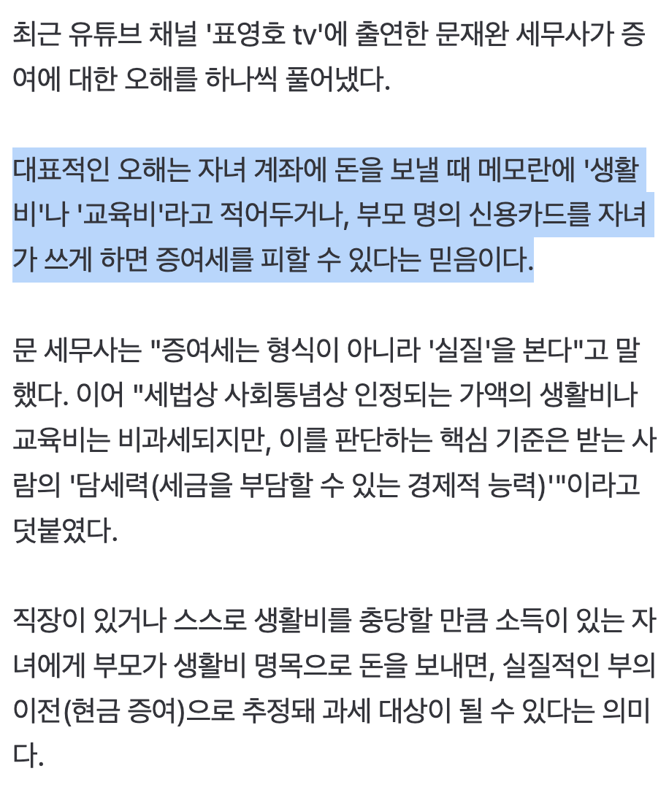
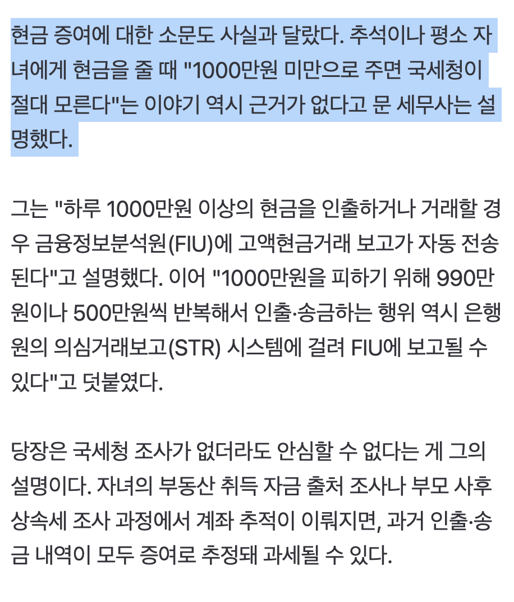

https://n.news.naver.com/mnews/article/014/0005580754
부모 명의 신용카드를 자녀가 쓰게 하면 증여세를 피할 수 있다는 믿음이다.
-> 이건 개드립에서도 본 것 같은데..


https://n.news.naver.com/mnews/article/014/0005580754
부모 명의 신용카드를 자녀가 쓰게 하면 증여세를 피할 수 있다는 믿음이다.
-> 이건 개드립에서도 본 것 같은데..
니말이맞긴함 안잡는거지 못잡는건아님ㅋㅋ
뭔 메소 수수료작이야?
부모 명의 신용카드를 자녀가 쓰게 하면 증여세를 피할 수 있다는 믿음이다.
이건 세무조사로 알 수가 있음?
오프라인에서 카드 쓰면 잡을 수가 있나
부동산 살때 자금출처 제출할때 간혹 자백하듯이 걸림
근로소득으로 집살돈 마련했다고 증명하기엔 빠듯할때 생활비는 부모님이용돈줬어요 부모님카드썼어요같은 변명을 하거든
오프라인에서 써대니까 쉽게 잡지 ㅋㅋ
부모 명의의 카드들 모아다 결제내역 싹 찍으면 업체가 줄줄 나오는데
사람이 분신술 쓰는게 아닌 이상 자식한테 준거는 동선이 말이 안되는 곳에 찍힘
자식 본인 교통카드나 핸폰 통신사 GPS랑 대조하면 더 빼도박도 못하고
우리나라는 국가의 감시능력이 어마해서 공무원들이 업무 상으로 다 볼 수 있음
상상해서 말하는게 아니라
주변에서 병무청이 대체복무자 근태 털 일 있어서 조회한거랑
감사원이 연구비 횡령사건 털 때 조회한 케이스 직접 본적 있음
전자는 송민호처럼 살다가 주변에서 신고당해서 복무연장 징계받았고
후자는 횡령금액이 억대라 연구과제 감사 때 매우 수상하다고 판단되어
한 랩실의 교수, 원생, 직원 수십명 개인정보 싹 털어보고 횡령범 잡힘
실제 서류로 횡령범이 수년간 돈 쓰고 다닌 내역이랑 (백화점, 성형, 카드깡)
사람들이 가끔씩 재미로 찍는 폰 지도 타임라인도 눈앞에서 확인할 수 있었음
횡령범이 여자고 교수가 남자다? 둘이 불륜 아닌지도 다 조사함 (흔한 공범)
당연히 국세청이나 검경이라고 이런 걸 못 볼리가 없고
일반인들은 단순히 잡범들이라 가성비 안나와서 냅두는거임
지금은 연예인 탈세 쯤 돼야 건수가 나오니 사람들 투입되는데
이쪽도 AI 본격적으로 들어오면 일반인까지 자동으로 다 털어갈듯
결제정보, 위치정보만 가지고도 기계적으로 싹 잡을 수 있음
나 집안 망했을때 집에 7, 800만원씩 또는 천만원씩 여러번 보낼때 은행직원이 통장 쪼개고 차용증 쓰면서 세금 까주는 방법 알려주셨는데
세무사가 그거 의미업대
차용증은 엄밀히 말해 탈세는 아니고 절세인데 제대로 갚아야 함
2억을 그냥 주면 => 증여한도 넘어가서 증여세 나옴
2억을 주고 차용증 쓰면 => 이자를 증여한 걸로 판단해서 한도 밑
근데 이것도 국세청에서 출동하면
당시에 내용증명 해놓은 차용증에 5년 이내 구체적 상환계획이랑
그 계획대로 매달 꾸준히 갚고 있다는 증거 없으면 잡혀감
그래서 생각보다 요건 맞추기 어렵고 (5년만에 다 갚을 능력이면 은행에서 이미 빌려줬음)
국세청이 벌집에 꿀 좀 쌓였나 곰발바닥 쑥 넣는 순간 다 털려나갈 걸
자녀가 카드쓰는걸 어찌잡는다는거지? 결제내역마다 cctv 까서 사용자 검증할거야???
다른건 몰라도 이건 확실하게 증여가능한거아닌가
자녀가 부모랑 아예 다른 지역 살면 잡을 수는 있음. 같은 지역 살면 사실 못잡지
사용패턴, 물품내역, 시간 등으로 정상 사용인지 이상 사용인지 추적할 수 있겠지
50대 당뇨 남성이 20대가 가는 헌팅 포차에서 돈 쓰는 기록 있으면 누가 봐도 이상한 것처럼 말이야. 먼 미래에는 AI 딸깍으로 바로 분석해서 추적할꺼다
절대 못 잡음.
이거 걸리는건 다른거 걸렸을때 같이 털다가 걸리는 거지
이게 맞지 헌포간걸로 터는게 아니라 딴거 털게 생기니까 헌포까지 털리는거지
헌포 cctv라도 확보 못하는이상 내가쓴거 맞다 우기면 니가 안쓰고 자식이 쓴거라는걸 입증할 방법이 없지않나?
욕 다적고 라고할뻔~ 이라고 한다고 판사가 안봐주듯이 세무조사 하는놈들도 빠꼼인데 일부 넘어갈순 있겠지만 다는 못넘어가지
다 잡힘
카드 내역, 통신사 내역 둘만 가지고도 완벽하게 위치가 다 대조됨
이 결제는 너다라고 나오는게 아니라 부모의 지도 타임라인과 동선이 있는데
뜬금없이 대학가 떡볶이집 결제되고 자식 쪽 GPS나 교통카드가 그 동네 찍혀있고 이런 식
카드주면 뭐 어떻게 알건데 ㅋㅋ
이론상 그렇다는거지 ㅋㅋㅋㅋㅋ
실질적으로 맞는 소리라 생각함
현금으로 증여하고 자식은 생활비로 쓰면 어캐 잡음?
마늘밭에 묻어뒀는데 삮아서 없어졌어요 ㅋㅋㅋ 잡아봐~
돈을 줄때 걸리는게 아니고 돈을 쓸때 걸림
부동산구매할때 자금소명을 할수가 없는데 되도안한 말로 작성해놓으면 조사들어감
대 AI 시대에 이제 예전에는 봐주던 건들 앞으로 전부 다 걸린다고 보면 됨. 10년 뒤에 세금 폭탄 받기 싫으면 지금부터 관리 해야 함. 10년 뒤에 10년치 자료 그냥 긁어넣고 해줘 하면 쫙 자동으로 뜨는 세상 될 텐데
회사에서도 징계 감사 조사하던거 자료 다디비까고 논리 맞추는거 n년치까면 한달은 걸렸는데 이제 한시간도 안걸임
심지어 의심 비위정황까지 추가로 다 찾아줌
친구놈 아직도 생활비는 부모님카드로 쓰면서 월급 100% 저축함.
ai가 공무를 대체하면
인간이 조사하기엔 너무 방대한 사사로운것들로 인해서
사람들 세금 폭탄들 맞을것같음
보통 국세청이 전부 까보는건 토허제 주택구입시 자금출처, 상속세 이거 두가지임
국세청은 봐서 미신고 증여로 의심되면 불성실 가산세까지 적용해서 때리는거고 그거에 대한 소명은 본인들이 해야함
국세청이 이건 증여인지 입증못하겠지가 아니라 너 이거 소명 못하면 증여임을 박고 시작한다는걸 잊지마라
재수없이 한놈 걸리는거임...
돈빼돌리고 호화생활하는 사기꾼도 못잡으면서 무슨
우리나라 경찰들이 부모카드 쓴것까지 조사할거같음? 경찰이아니몀 누가함 ㅋㅋ
Cctv라도 보고?
경찰이? ㅋㅋㅋㅋ
이재용급이면 조사하긴 하겠다 ㅋㅋㅋ
보통 이런건 당사자가 나불거리다가 주변인한테 신고당하는거 아닌가..?
ㅈ밥들한텐 해당없음 990만이아니라 몇천단위로 대놓고 보내도 관심도없음 ㅋㅋ
문재완 세무사 = 가수 이지혜 남편
그냥 안잡는거지 못잡는게 아님 죄다 대부분 헛소리들임 저 위의 댓글처럼